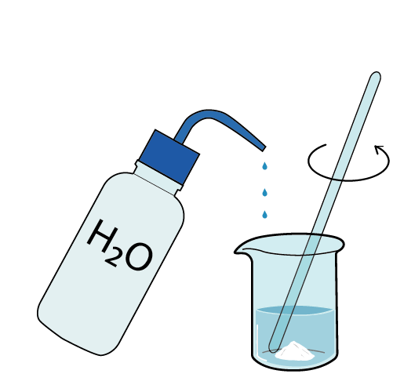
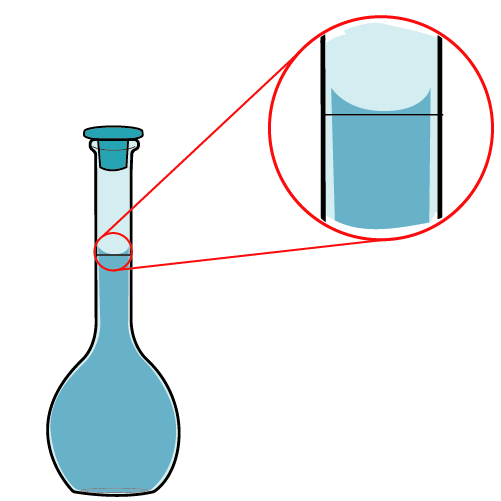

Berzelius
Gestão Laboral
-
Solução de Benedict (Reativo de Benedict) - para determinação quantitativa de glicose - 1L

1 Solução 1 - Dissolva juntos 146,1 g de Citrato de Sódio Dihidratado (129 g - Anidro) e 100g de Carbonato de Sódio Anidro em 850 mL de água quente, filtre se necessário;
2 Em outro béquer dissolva 17,3 g de Sulfato de Cobre Pentahidratado em 100 mL de água destilada;
3 Misture lentamente a solução de sulfato de cobre com a solução 1;

4 Avolume com água destilada até 1L em um balão volumétrico, homogenize. Guarde em um frasco escuro e rotule.
Esta solução forma quantitativamente um precipitado que pode ser de vermelho a verde por aquecimento com solução de glicose
-
Referências
MORITA, T.; ASSUMPÇÃO, R. M. V. Manual de Soluções Reagentes e Solventes. 2ª ed. Editora Edgard Blucher, 2007.